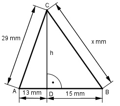

Pythagoras Aufgabe 7 Berechnen Sie x in mm.

Satz von Pythagoras im Dreieck ADC: 292 mm2 = h2 + 13³ mm2 | - 132 mm2 h2 = 292 mm2 - 132 mm2 = 672 mm2 |√ h = h = 25,9 mm Satz von Pythagoras im Dreieck DBC: x2 = 152 mm2 + h2 = 132 mm2 + 25,92 mm2 = = 895,8 mm2 |√ x = x = 29,9 cm